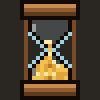
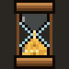
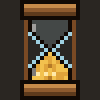
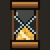
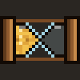
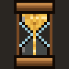

aON ITS OWN
bBESIDE THE VIDEO (COLUMN)

cUNDER THE VIDEO (STRIP)
v1 · 22 Oct: smoother sand, exact time, lighter on your PC, softer sounds, more ways to touch it
What I found: today's hourglass is redrawn from scratch 5 times a second as 364 tiny boxes, and the old boxes pile up until they're cleaned. That's why the timer uses about twice the memory of the other pop-outs. The new sand is one tiny picture that only changes when a grain moves. Every hourglass on this page is the new engine, running for real. Try them: hover, click the glass, scroll on it.
WHAT TO PICK 1 pause: A or B · 2 sound: A or B. I'd pick A and A.
Grains tumble like real sand, the stream shimmers down the middle, and the pile builds into a little hill. The clock is exact to the second, and the last grain lands on 0:00. A timer on its own is the plate. Joined beside a window it stands as a column; joined under one it lies as a strip. Two timers get two sand colours.
The last few grains drip one by one, the stream stops, a little glint runs over the pile, and the plate gives one soft hop with the chime. The keys come up on their own: Again turns the hourglass over (same time again), +5 turns it over for five minutes, ✕ closes it. Aang's card still shows Got it / 5 more as today; either one works.







If you don't answer:
These two pause and go every few seconds (click one to stop that). Clicking the hourglass pauses it.
What you'd do with a real hourglass. The sand slides over in each bulb and stops. You can tell it's paused from across the room, without reading anything.
The stream stops, the time greys, and a small PAUSED shows under it. Quieter, but easier to miss.
Made in the same wooden family as your chimes, at the same gentle level (today a timer plays the old, loud needs-you sound). The chimes' volume slider controls it too. Pressing one also makes it the sound in section 2.
A breath of sand settling, then three soft wooden notes climbing to C. Short.
One struck bowl, long and soft, slowly breathing. Calmer, but longer.
Only if you didn't answer: the same climb plus one step up, a touch louder. Then it stops.
Again, +5, or a new timer: a small knock and a short pour.
One minute added or taken off with the wheel. The quietest sound in the set.
| DO THIS | IT DOES |
|---|---|
| Hover | The keys come up under it: +1, II pause, ✕ stop. Same rhythm as today. |
| Click the hourglass | Pause / go on. At time's up: turn it over (Again). |
| Scroll on it | Up = one more minute, down = one less (Shift = five). A small "+1:00" shows, and grains flow back up or drop through. Never below 10 seconds. |
| Hold ✕ | Stop. Held for half a second (a bar fills), so a stray click never kills a timer. |
| Drag it | Moves it; it snaps to the other pop-outs, as today. |
| Right-click | The menu: see-through, pin, click through, stop. Plus Sound: the chime / bowl / none for this timer. |
| New timer, a name, a preset | Tell Aang ("25 min pizza", "call it raid pull"). One place to talk: no typing box on the timer. |
| Esc | Closes its menu. (The timer never takes your keyboard, so WoW keeps it.) |
When a game is in front, the stream stands still and only the grains drop, once per grain. Same time, same picture, almost no work. Left: at the desk. Right: in a game.
| MEASURED ON YOUR PC (one timer window, 10-12 s each) | MEMORY | CPU | REDRAWS |
|---|---|---|---|
| Today's timer | 63-75 MB | 0.31-0.35% | 5 a second, the whole hourglass |
| New sand, at the desk | 31 MB | 0.16-0.18% | about 9 a second, only the changed picture |
| New sand, in a game | 31-33 MB | 0.02% | one short burst per grain |
| An empty window, for scale | 24 MB | 0% | none |